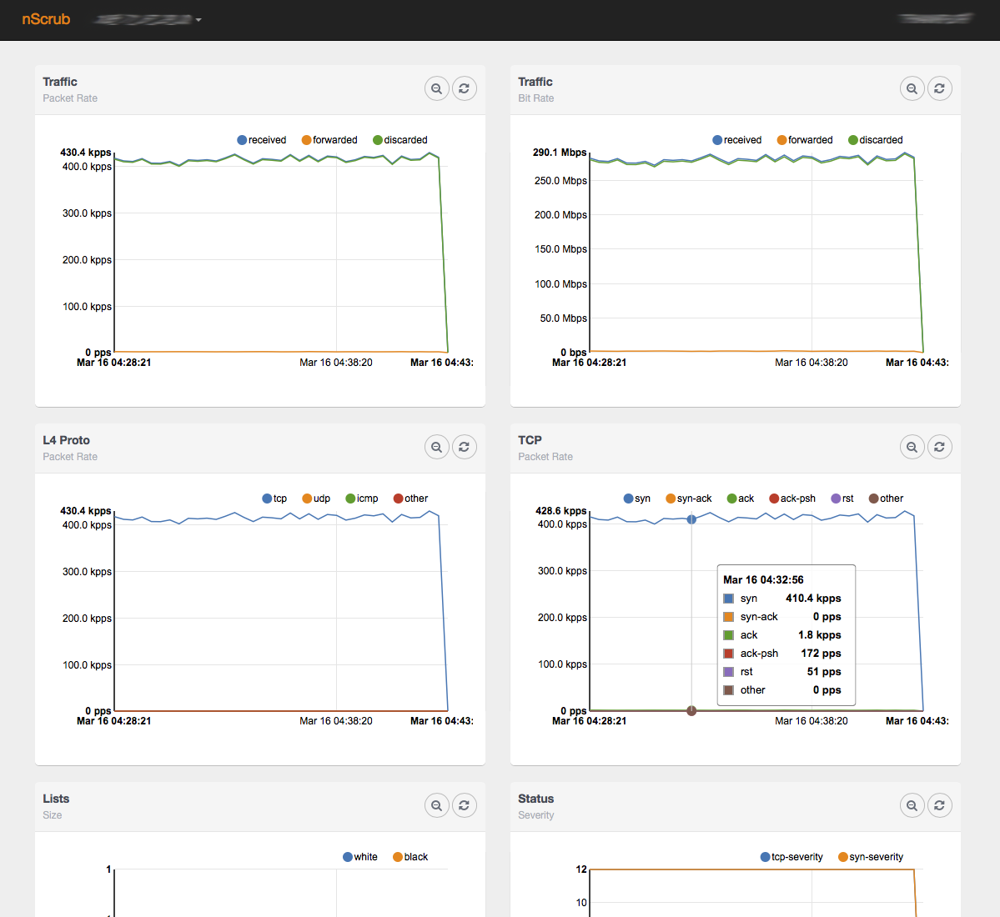

Видимость трафика
В этом разделе показаны варианты видимости трафика, находящегося в стадии смягчения.
Статистика
Приложение предоставляет глобальную статистику и статистику по жертвам.
Глобальная статистика доступна через логи:
tail -f /var/tmp/nscrub.log
или через REST API:
curl -u <user>:<password> "https://<host>:<port>/stats"
Статистика по жертвам доступна через REST API:
curl -u <user>:<password> "https://<host>:<port>/targets?action=stats&target_id=<target id>"
Историческую статистику по RRD, как глобальную, так и по каждому потерпевшему, также можно получить с помощью браузера, подключающегося к https://<хост>:<порт>/monitor.html
Примечание
nScrub по умолчанию прослушивает локальный хост, настройте другой адрес (опция -G) для подключения с помощью браузера на удаленном компьютере.

Мониторинг трафика
Программное обеспечение имеет возможность экспортировать часть трафика в программные очереди для подключения внешних приложений, для анализа или записи трафика:
Чтобы включить вспомогательные программные очереди для мониторинга трафика, необходимо добавить опцию –aux-queues|-O в файл конфигурации nScrub, указав количество выделяемых очередей, которое соответствует максимальному количеству одновременных приложений, которые будут отслеживать трафик (очереди являются одним потребителем).
--aux-queues 1
Обратите внимание, что во избежание механизмов блокировки для каждого потока создается очередь (мы называем ее «набор очередей») для каждого потребительского приложения.
После включения вспомогательных очередей их можно настроить для экспорта выборочного (или всего) трафика (хорошего, отклоненного или всего) во внешние приложения через API:
curl -u <user>:<password> "https://<host>:<port>/mirror/<queue set id>/type[?action=update&value={forwarded, discarded, injected, all}]"
curl -u <user>:<password> "https://<host>:<port>/mirror/<queue set id>/direction[?action=update&value={wan, lan, any}]"
curl -u <user>:<password> "https://<host>:<port>/mirror/<queue set id>/sampling[?action=update&value=<sampling rate (0 for no traffic)>]"
тип параметр определяет, какой тип трафика зеркалировать:
перенаправлено: Только перенаправленные/пропущенные пакеты
выброшенный: Только отброшенные пакеты
впрыснутый: только внедренные пакеты (например, файлы cookie SYN, ответы RST).
все: Весь трафик (по умолчанию)
направление параметр определяет, какое направление трафика зеркалировать:
слабый: Только пакеты, поступающие с интерфейса WAN.
локальная сеть: Только пакеты, поступающие с интерфейса LAN.
любой: Пакеты от обоих интерфейсов (по умолчанию)
выборка параметр задает частоту дискретизации (отражать каждый N-й пакет).
Пример:
curl -u <user>:<password> "https://<host>:<port>/mirror/0/type?action=update&value=all"
curl -u <user>:<password> "https://<host>:<port>/mirror/0/direction?action=update&value=wan"
curl -u <user>:<password> "https://<host>:<port>/mirror/0/sampling?action=update&value=100"
Используя инструмент CLI:
nscrub-cli
localhost:8880> mirror 0 type all
localhost:8880> mirror 0 direction wan
localhost:8880> mirror 0 sampling 100
Анализ трафика с помощью tcpdump
Например, можно использовать tcpdump для мониторинга трафика, запускающего один экземпляр на каждый поток обработки, указав идентификатор кластера и идентификатор потока/очереди в имени интерфейса:
tcpdump -Q in -ni zc:99@0
tcpdump -Q in -ni zc:99@1
tcpdump -Q in -ni zc:99@2
tcpdump -Q in -ni zc:99@3
Альтернативно можно объединить весь трафик в одну очередь и запустить один экземпляр tcpdump:
zbalance_ipc -i zc:99@0,zc:99@1,zc:99@2,zc:99@3 -c 100 -n 1
tcpdump -Q in -ni zc:100@0
Анализ трафика с помощью ntopng
Таким же образом можно анализировать трафик, используя ntopng:
ntopng -i zc:99@0 -i zc:99@1 -i zc:99@2 -i zc:99@3
Это создает 4 интерфейса в ntopng, однако их все можно объединить в одном представлении. чтобы иметь возможность анализировать совокупный трафик со всех из них:
ntopng -i zc:99@0 -i zc:99@1 -i zc:99@2 -i zc:99@3 -i view:zc:99@0,zc:99@1,zc:99@2,zc:99@3
События
nScrub может экспортировать события, как только обнаружено аномальное поведение, например пороговое значение. был пересечен, или один из алгоритмов автоматического обнаружения активирует механизм защиты. События можно экспортировать (записывать в журнал или отправлять по почте или на другие конечные точки) с помощью сценариев. nScrub уже включает примеры сценариев в /usr/share/nscrub/scripts/callbacks/events, они их можно настроить и включить, сделав их исполняемыми (chmod +x <script>). Дополнительные настройки сценарии можно создавать и активировать, поместив их в одну папку и сделав их исполняемыми. Строка JSON, представляющая событие, предоставляется сценарию на стандартном вводе. Событие Формат описан в таблице ниже.
Имя |
Тип |
Описание |
|---|---|---|
универсальный |
int64 |
Уникальный идентификатор события |
идентификатор |
интервал |
Номер события с момента запуска |
целевой_ид |
интервал |
Идентификатор цели |
статус |
нить |
новое, продолжение или прекращение |
тип |
интервал |
Тип события |
причина |
интервал |
Причина события |
эпоха |
интервал |
Эпоха |
время |
нить |
Время (читаемое человеком) |
продолжительность |
интервал |
Продолжительность мероприятия |
нить |
нить |
Внутренний поток, обнаруживший событие |
Пример включения сценария «регистратора», который регистрирует события в /var/tmp/nscrub/events.log
chmod +x /usr/share/nscrub/scripts/callbacks/events/logger.sh